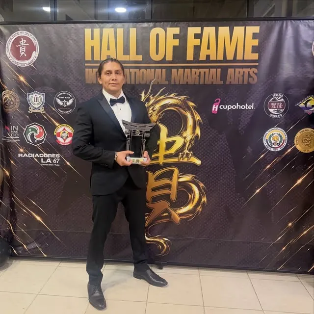
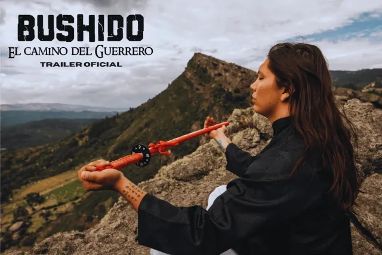
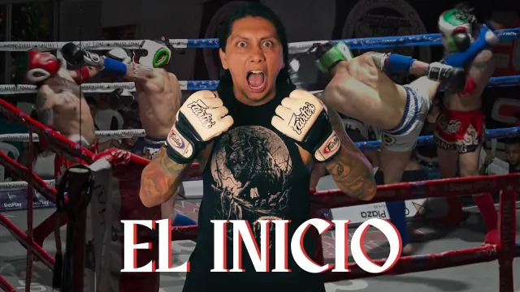
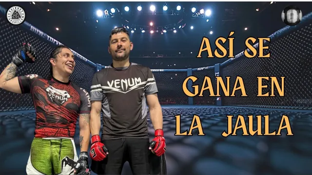
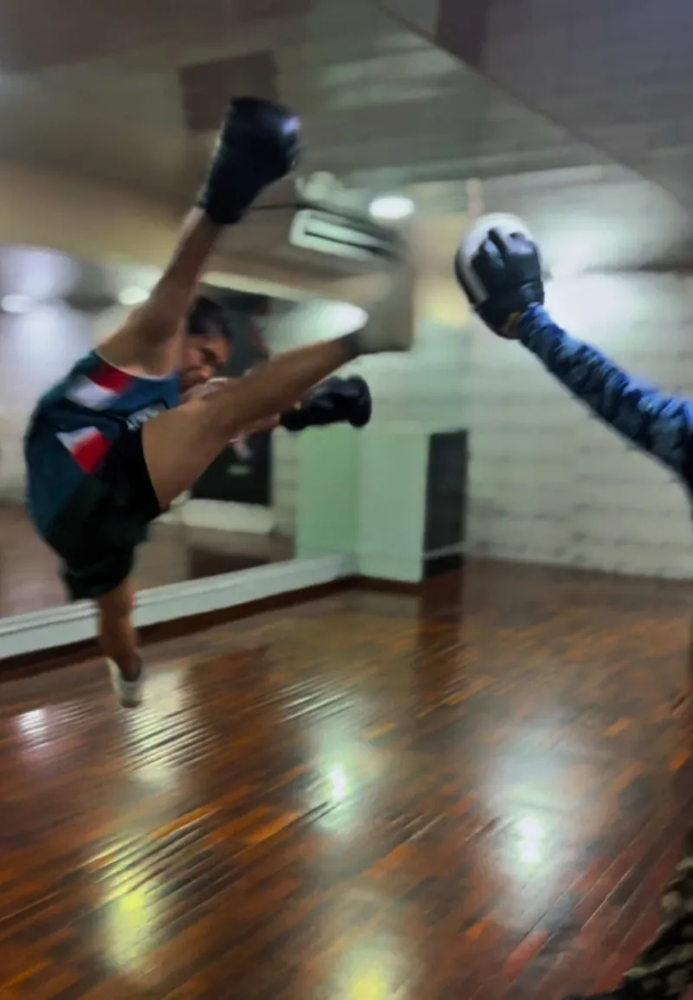
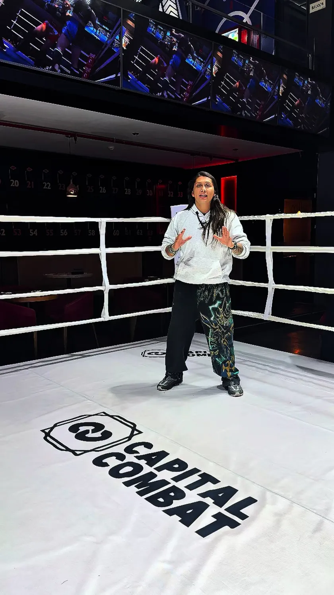

De niño de Ecomoda
a guerrero.
Soy Iván Darío Piñeros. Soy Ragnar. Peleador, profesor de MMA en Bogotá y creador de Bushido, El Camino del Guerrero. Esta es mi historia — y puede ser el comienzo de la tuya.
- Ex niño de “Betty, la fea”
- Peleador y profesor de MMA en Bogotá
- MC oficial de Rolling War
- Creador de la serie “Bushido”
Mi historia
Antes de ser Ragnar, fui Jimmy. Antes de la jaula, hubo un niño en Ecomoda.
Mucha gente me conoció sin saber mi nombre. De niño, entre los 7 y los 10 años, aparecí en Yo soy Betty, la fea como Jimmy Fuentes, el hijo de Aura María. Fue una sola aparición, pero quedó en la memoria de todo un país. Mis papás me postularon sin que yo tuviera experiencia actuando, hice otros proyectos y publicidad, y después la vida siguió por otro lado.
Durante años caminé el camino convencional: estudiar, trabajar — pasé por la publicidad — y vivir apegado a lo que se esperaba de mí. Por fuera todo estaba en orden. Por dentro, no. Yo sabía que había otra vida posible, una que se ganaba con disciplina y no con costumbre.
Esa vida apareció en las artes marciales. El kickboxing y el taekwondo me dieron la base; el aikido, el kendo y la filosofía samurái me dieron el código. El bushido — el camino del guerrero — dejó de ser una fascinación y se volvió mi forma de vivir: respeto, coraje, constancia y honor, dentro y fuera de la jaula. A eso se sumó la mitología nórdica que siempre me acompañó. Así nació Ragnar: el hijo de Odín que entiende que nadie te regala el camino. Se camina.
Mi logo lo dice sin palabras. La runa grande es Raidho: el viaje, el camino. La pequeña es Othala: la herencia, el legado. Porque esto no va solo de pelear. Va de qué haces con lo que la vida te dio y en quién te conviertes recorriéndolo.
Hoy soy peleador, profesor y la voz de los eventos que están construyendo el MMA colombiano. Entreno y enseño en Bogotá, presento y cubro las noches de pelea, y cuento todo el proceso en mi serie Bushido, El Camino del Guerrero. No llegué. Estoy en el camino. Y el camino es para compartirlo: por eso esta página existe.

Línea de tiempo
- El niño de EcomodaJimmy Fuentes, hijo de Aura María en “Yo soy Betty, la fea”. Una aparición que Colombia no olvidó.
- El camino convencionalOtros proyectos, publicidad y años de vida “como se esperaba”. La inquietud seguía ahí.
- El encuentroKickboxing y taekwondo. Después, aikido, kendo y el código bushido. Entrenar dejó de ser un hobby.
- Nace RagnarLa mitología nórdica y la filosofía samurái se unen en un solo nombre: Ragnar Fighter.
- La serieNace “Bushido, El Camino del Guerrero” en YouTube: el proceso, contado capítulo a capítulo.
- HoyPeleador, profesor de MMA en La Cabaña (Bogotá) y voz del MMA colombiano: MC, cobertura y comunidad.
Bushido
El Camino del Guerrero — la serie.
Esto no es un resumen de peleas. Bushido es el registro real de un camino: lo que cuesta dejar la vida convencional, entrar a una jaula, entrenar con los que saben más que tú y seguir cuando nadie está mirando. Cada capítulo es una lección del código: coraje, respeto, disciplina y legado.
Mírala en orden. Empieza por el capítulo 1. Y si estás pensando en cambiar tu propia vida, esta serie es para ti.
-

Tráiler oficial — “Bushido, El Camino del Guerrero”
La puerta de entrada: quién es Ragnar, por qué dejó el camino convencional y qué significa seguir el del guerrero.
Ver tráiler → -

Capítulo 1 — “La pelea que cambió mi vida”
La pelea que lo cambió todo: el punto en el que entrenar dejó de ser una opción y se volvió una decisión de vida.
Ver capítulo 1 → -

Capítulo 2 — “Sobreviviendo a la jaula”
Dentro de la jaula no hay personaje: hay preparación, miedo y respeto. Así se sobrevive — y así se aprende.
Ver capítulo 2 → -
Capítulo 3 — “Entrenando con una leyenda”
Entrenar con quien ya recorrió el camino: humildad para aprender y disciplina para estar a la altura.
Ver capítulo 3 →
La serie sigue. Cada evento, cada entrenamiento y cada pelea dejan un capítulo nuevo por contar. Suscríbete, mira los capítulos en orden y compártelos con alguien que necesite empezar su propio camino.
Entrena conmigo
No necesitas ser peleador. Necesitas decisión.
Aquí no vienes solo a golpear un costal. Vienes a construir disciplina. Mis clases combinan la técnica del kickboxing y el taekwondo con el trabajo real del MMA, y con algo que no se ve en el espejo: la filosofía del camino. Respeto por el compañero, constancia cuando no hay ganas y orgullo por el progreso, por pequeño que sea.
Qué se trabaja: golpeo y pateo (kickboxing y taekwondo), fundamentos de MMA, acondicionamiento físico, movilidad y mentalidad. Cada clase tiene técnica, práctica y cierre: qué aprendiste y qué vas a mejorar la próxima vez.
Para quién es: para quien empieza desde cero y quiere una base seria; para quien ya entrena y busca corregir técnica; y para quien no quiere competir, pero sí quiere la disciplina de un guerrero en su vida. No necesitas experiencia previa. Necesitas llegar.

- Días
- Martes y jueves
- Horario
- [DATO POR CONFIRMAR: hora exacta de inicio y fin]
- Lugar
- Carrera 71A BIS #63D-41, Barrio La Cabaña, Bogotá
Cómo llegar - Precio
- [DATO POR CONFIRMAR: mensualidad / clase suelta]
- Qué traer
- Ropa deportiva, agua y, si tienes, vendas y guantes. Si no tienes equipo, pregunta antes de comprar.
Enlace wa.me/[DATO POR CONFIRMAR]
Cuéntame tu nivel y tu objetivo. Te respondo con horarios, cupo y cómo llegar.
Eventos y cobertura
Cuando la jaula se enciende, alguien tiene que contar la noche.
Un evento de MMA no es solo la pelea. Es la entrada, la espera, el nombre anunciado en alto y la historia que el público se lleva a casa. Ese es mi trabajo como voz: darle a cada peleador su momento y a cada noche, su memoria.
Fui maestro de ceremonia oficial de Rolling War 3 y he estado en las noches que están haciendo crecer este deporte en Colombia y la región — presentando, cubriendo y acompañando a los peleadores también fuera del país, en Panamá y en Venezuela. Conozco la jaula por dentro: por eso la cuento con respeto.

Servicios
-
Maestro de ceremonia (MC)
Presentación de peleadores, conducción de la velada y energía de principio a fin. La voz que el público recuerda cuando se apagan las luces.
-
Cobertura de eventos
Contenido en vivo y posterior para redes: previas, entrevistas, backstage y resumen de la noche, con la mirada de alguien que entrena y pelea.
-
Contenido para promotoras
Piezas para anunciar carteleras, presentar peleadores y mantener viva la conversación entre un evento y el siguiente.
He estado en
- Rolling War 3 (MC oficial)
- Capital Combat
- Primitivo
- Empire 15
- OPG
- Kombat Jiu Jitsu
- Round One
- 300 Fighting Championship
- UCC — Panamá
Tarifas y disponibilidad fuera de Bogotá: [DATO POR CONFIRMAR]
Para marcas
Hay influenciadores con más seguidores. No hay otro con esta historia. Ragnar es el único creador que une tres mundos: la memoria de todo un país por “Betty, la fea”, la credibilidad real de la jaula y el respeto de la comunidad que está construyendo el MMA colombiano. Si tu marca quiere hablarle a quien entrena, pelea y no se rinde, esta es la conversación.
Qué puedo ofrecer a tu marca
-
Contenido
Reels, historias y menciones integradas en entrenamientos y en la serie Bushido — nada forzado, todo dentro del camino.
-
Presencia en eventos
MC, cobertura y activaciones en las noches de MMA donde está tu público.
-
Embajador
Uso continuo y honesto de productos de pelea, entrenamiento, recuperación y estilo de vida del guerrero.
-
Comunidad
Una audiencia que no sigue un personaje: sigue un proceso real, capítulo a capítulo.
Cifras — octubre de 2026
- @ragnarfighter
- Aprox. 5.6 K seguidores
- TikTok
- @ragnarfighters
- Aprox. 6.7 K seguidores · 128.5 K likes
- YouTube
- @ragnarfighter
- Canal de la serie “Bushido, El Camino del Guerrero”
[DATO POR CONFIRMAR: enlace final]
Método Bushido — muy pronto
No todo el mundo puede entrenar conmigo en Bogotá. Por eso estoy construyendo el Método Bushido: mi programa digital para entrenar el cuerpo y la disciplina del guerrero desde cualquier lugar — técnica, acondicionamiento y código, en un solo camino.
Aún no tiene fecha ni precio, y no te voy a vender humo: cuando esté listo, lo sabrás aquí primero. Déjame tu correo y entra a la lista de espera. Sin spam. Solo el aviso de lanzamiento y contenido del camino.
Al suscribirte aceptas recibir correos de Ragnar Fighter. Puedes salirte cuando quieras.
Prensa
La historia que los medios ya empezaron a contar.
Del niño de Ecomoda al guerrero: la prensa colombiana ya ha contado la transformación de Iván Darío Piñeros — Canal RCN / SuperLike (2024), Metro World News (2024) y Vibra (2025), entre otros. Si eres medio, programa o podcast y quieres contarla completa — con el peleador, el profesor y la serie — escríbeme. Hay historia, hay imágenes y hay un camino en curso.
Preguntas frecuentes
¿Dónde entrenas?
En Bogotá, en el Barrio La Cabaña: Carrera 71A BIS #63D-41. Ahí doy mis clases de MMA los martes y jueves.
¿Qué horarios tienen las clases?
Martes y jueves. La hora exacta es [DATO POR CONFIRMAR] — escríbeme por WhatsApp y te confirmo horario y cupo al momento.
¿Necesito experiencia para empezar?
No. Necesitas decisión. Las clases trabajan base técnica de kickboxing y taekwondo, fundamentos de MMA y disciplina, y se adaptan a tu nivel, empieces desde cero o ya entrenes.
¿Das clases personalizadas?
[DATO POR CONFIRMAR: confirmar si se ofrecen, en qué formato y precio] Mientras tanto, pregúntame por WhatsApp según tu objetivo.
¿Trabajas en eventos fuera de Bogotá?
Sí. He acompañado y cubierto eventos fuera de la ciudad y del país — entre ellos UCC en Panamá — y viajo con peleadores colombianos a Panamá y Venezuela. Cuéntame fecha y ciudad en el formulario de contacto.
¿Cómo te contrato para mi marca o mi evento?
Por el formulario de contacto de esta página o por WhatsApp [DATO POR CONFIRMAR]. Cuéntame qué necesitas — contenido, MC, cobertura o embajador — y te respondo con propuesta. Mi media kit está en la sección Para marcas.
¿Es verdad que saliste en “Betty, la fea”?
Sí. De niño fui Jimmy Fuentes, el hijo de Aura María. Fue una sola aparición, entre los 7 y los 10 años, y la prensa lo ha contado varias veces. Hoy esa historia es el punto de partida de otra: la de Ragnar.
¿Qué es Bushido?
Mi serie en YouTube, Bushido, El Camino del Guerrero: el registro real del proceso — la pelea que cambió mi vida, la jaula y el entrenamiento con una leyenda. Mírala en la sección Bushido de esta página.
Empieza tu camino
Para entrenar, para tu evento o para tu marca: el primer paso es el mismo. Escríbeme. Cuéntame quién eres y qué buscas, y te respondo con el siguiente paso, sin rodeos.
- WhatsApp: [DATO POR CONFIRMAR]
- Correo: [DATO POR CONFIRMAR]
- Instagram: @ragnarfighter
- TikTok: @ragnarfighters
- YouTube: @ragnarfighter
Recibido. El camino empieza con un paso — y ya lo diste. Te respondo lo antes posible. Mientras tanto, mira el Capítulo 1 de Bushido: “La pelea que cambió mi vida”.
Ver ahora →No esperes el momento perfecto. Entrena.
Entrena conmigo →